Image slideshow
Fade, slide, Ken Burns, captions and a blurred background.
Self-hosted digital signage
Narancs Signage is a complete signage system: an admin panel, a player that runs on any ARM or x86 box, and one-command installers for Ubuntu Server. Slideshows, calendars, forms, touch menus — managed from one place, running even when the network is down. Programmed entirely by Claude, Anthropic's AI.
One command on any Ubuntu Server or Raspberry Pi. No desktop, no window manager — just a locked-down Chromium kiosk.
curl -fsSL http://192.168.1.10:8080/install-player.sh | sudo bash
Waiting…
After the reboot the display shows a 6-digit code. Type it into the admin panel.
✓ “Lobby” is online — 1920×1080, Chromium 140
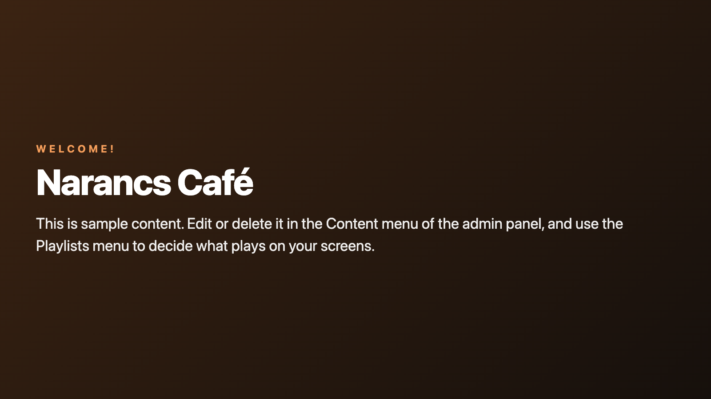
Live preview, coloured by your branding. 14 types in total.
Different playlists by time, weekday and date range. Drag the needle.
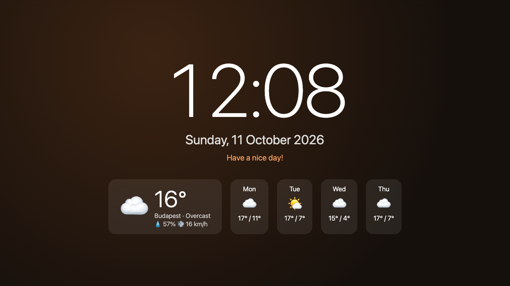
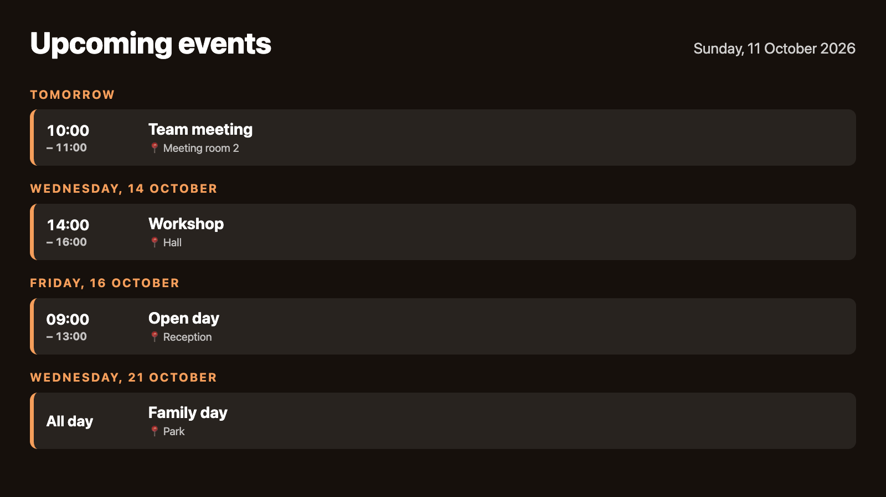
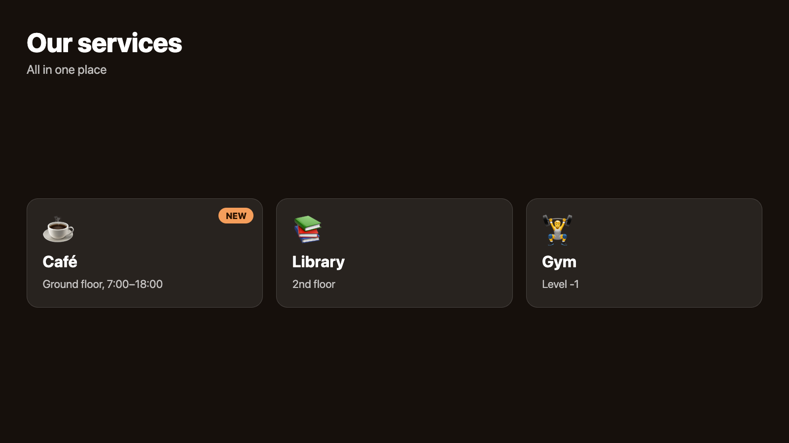
Fades, slides, Ken Burns. Cached offline. Remote reload, restart and emergency alerts from the admin.
Fourteen content types, all editable in the browser with a live preview.
Fade, slide, Ken Burns, captions and a blurred background.
Play to the end or for a set time, with or without sound.
Title, text, background image or video, gradients, logo.
Tiles with icons and badges; a tap opens other content.
Touch buttons, back/home, auto-return after inactivity.
Surveys and sign-ups with a virtual keyboard and CSV export.
List, week, month; your events plus Google/Outlook iCal.
Digital or analogue, 5-day forecast, no API key needed.
Any RSS or Atom source, with images.
Time left until an event.
Built-in generator for links and Wi-Fi login.
Embed a page or dashboard, with zoom and timed reload.
Show a document.
Your own HTML/CSS/JS in an isolated frame.
Playlists per screen by day, time window and date range. Scheduled screen off turns the monitor off too (DPMS).
Identify, previous/next, reload, clear cache, restart the player or reboot the device — from the admin.
10 built-in themes, custom colours, fonts, logo watermark and header bar. A different theme per screen.
An instant full-screen message on all or selected screens, with templates and expiry.
The player caches its configuration and media and keeps running if the server goes down.
Boot splash with a progress bar instead of console text, touch or mouse mode per screen, no translate pop-ups.
Every line — server, admin panel, player, installers and docs — was written by Claude, Anthropic's AI, in Claude Code. New features arrive the same way.
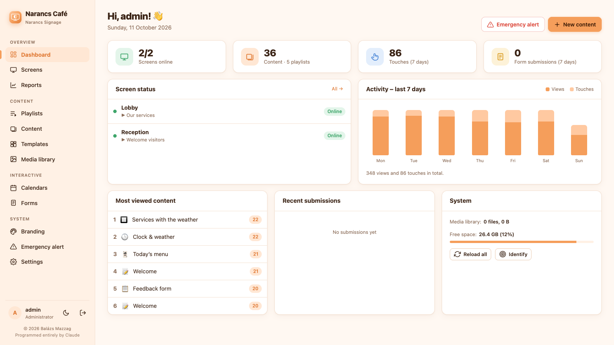
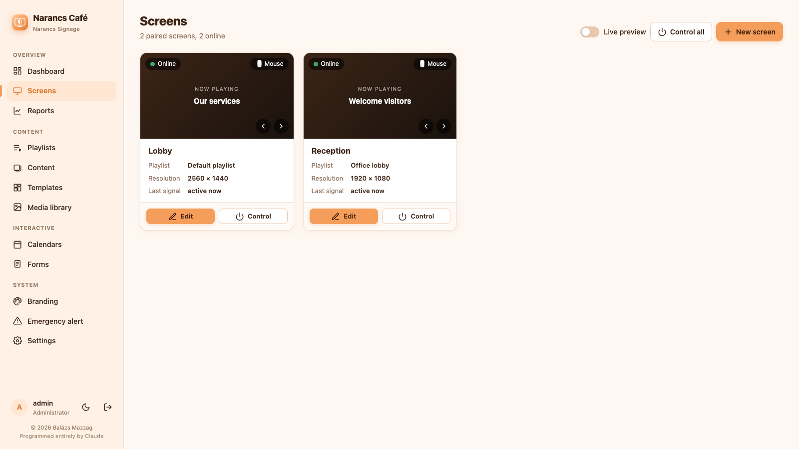
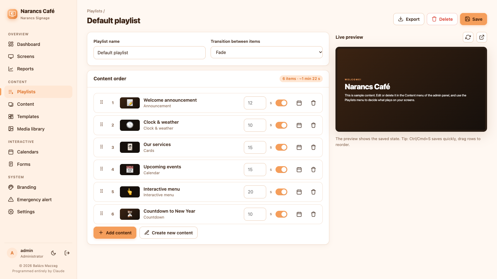
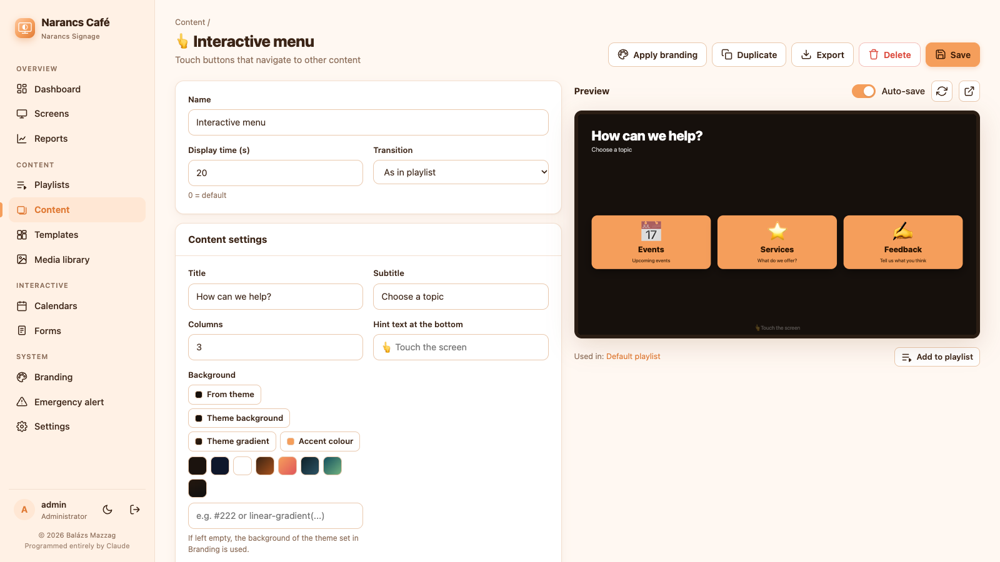
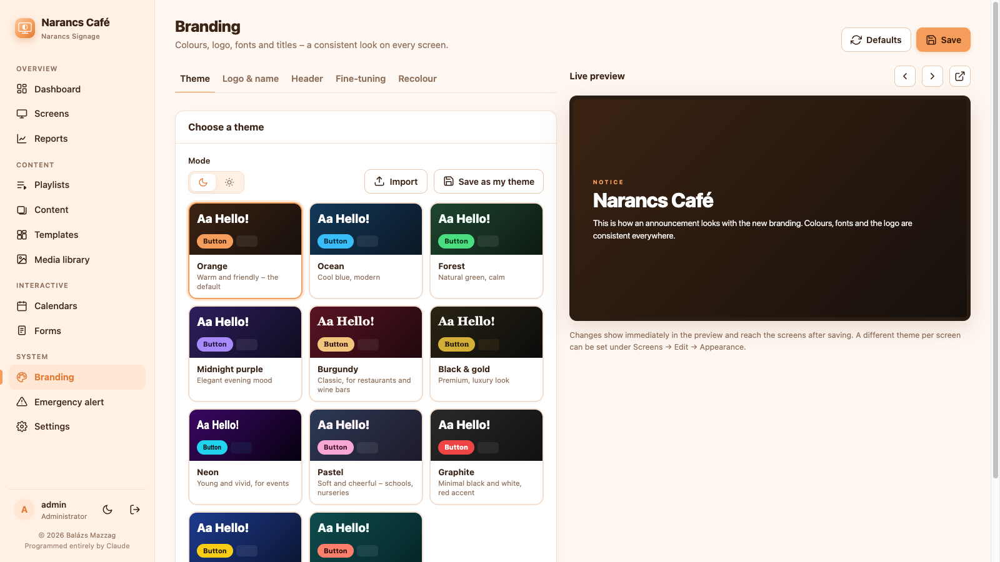
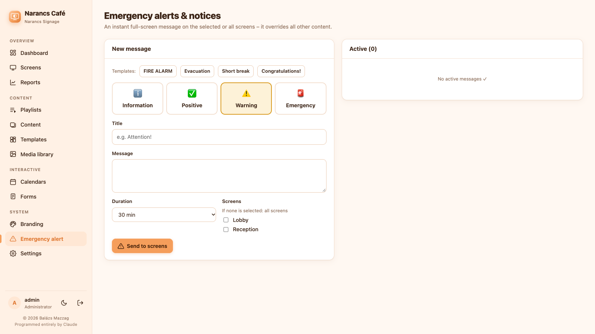
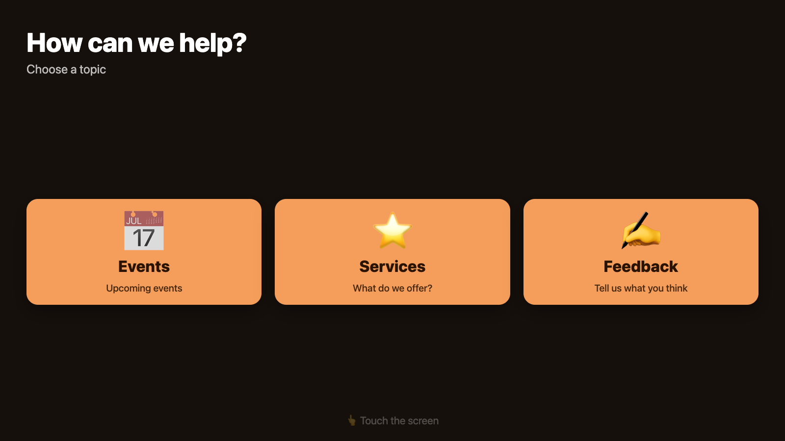
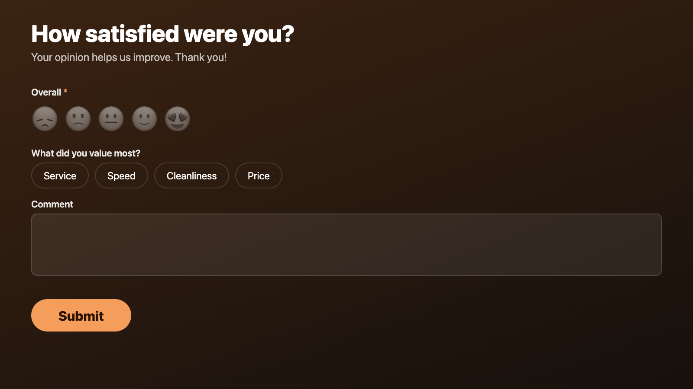
git clone https://github.com/mzzg-bazsi/narancs-signage.git
cd narancs-signage
sudo ./install/install-server.shInstalls Node.js, a systemd service and daily backups. Open http://SERVER-IP:8080/admin/ and create your account.
curl -fsSL http://SERVER-IP:8080/install-player.sh | sudo bashReboot, then enter the 6-digit code shown on the screen under Screens → New screen. No install? Open /player/ in any browser.